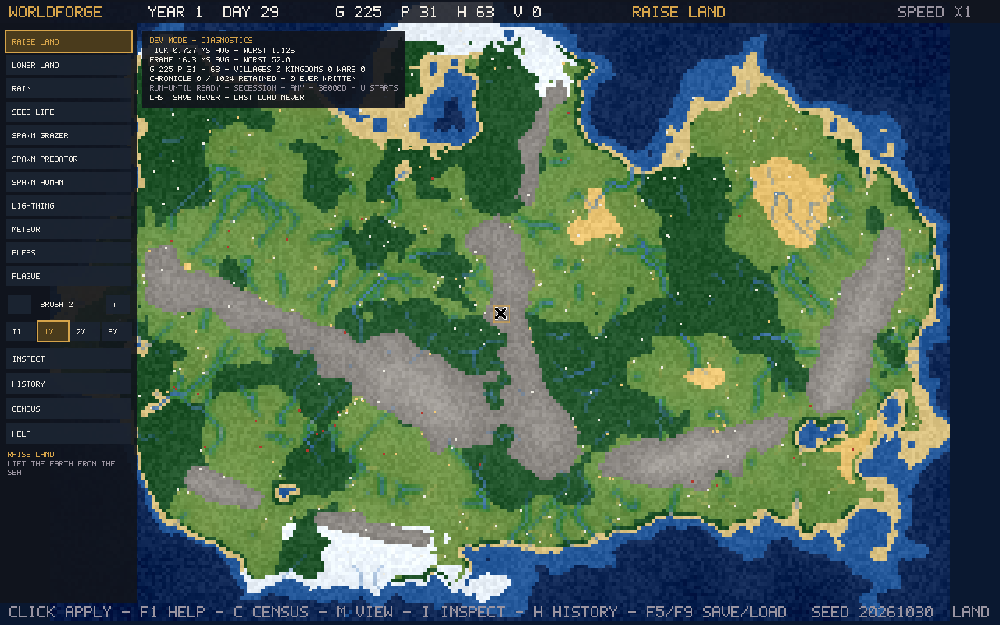

Development roadmap
How a piece of WorldForge work travels from idea to release — and where the work stands today.
Every stage below is a gate, not a formality. A stage changes status only when the development record supports it: completion is claimed from evidence, never assumed because earlier stages finished. Failing a gate sends the work back, not forward.
Completed
Concept & vision
A living-world sandbox: geography shapes civilizations, civilizations shape history.
Completed
Design & planning
Architecture, simulation rules, and the milestone plan.
Completed & verified
Engineering foundations
Deterministic simulation core, seeded world generation, save system, and the test discipline every later stage depends on.
Integrated & verified
Terrain workstream
Landform-based terrain, confirmed across a 100-seed comparison before adoption.
Gate passed
Validation gate
Controlled experiments verified the diplomacy model before implementation was accepted as the development baseline.
Current position
Implementation
Five gameplay milestones are complete and verified: chronicle, first-run experience, rulers and succession, warfare and conquest, and kingdom instability.
The current cycle is the simulation observatory — developer tools that expose why the world behaves as it does. Its design is approved, and it is built in five phases, each with its own gate:
- A — Truth Panel. Every important value shown with its rule, its inputs, and the events behind it. In progress.
- B — Historical Investigation. A permanent history record for every world, written in all sessions, with filtering and tracing. Blocked by Phase A's gate.
- C — World Autopsy. Structured investigation of collapses and turning points — trigger, contributing conditions, and honest unknowns kept separate. Blocked by Phase B.
- D — Health Monitor. Long-horizon measurement across many worlds: populations, kingdoms, wars, and performance over centuries. Blocked by Phase C.
- E — Integrated Interface. The four observatory areas — world view, inspector, timeline, metrics — joined into one workspace. Blocked by Phase D.
Gameplay development resumes when the observatory passes its final acceptance gate: a full investigation of a recorded 300-year collapse, filed as evidence.

Downstream
Implementation complete?
The finished work is checked against the acceptance criteria written before it began.
Decision gate
Implementation accepted?
Passing tests alone does not accept a stage. The evidence is reviewed against the criteria — including what the work does not prove.
Downstream
Integration & validation
The accepted work is merged, rebuilt from the merge result, and re-verified: full tests, determinism, and the project's standing rules.
Downstream
System-level verification
Native build, headless self-test, rendered output, behaviour, and performance.
Downstream
Verified evidence package
Commits, results, reproducible commands, and limitations — with verified and unverified claims kept separate.
Decision gate
Engineering review
Accepted work proceeds. Defects or gaps return the work to the relevant stage.
Downstream
Release candidate
A frozen revision with verified artifacts, a reproducible build, and known issues documented. A candidate is not a release.
Final gate
The project owner's approval
No approval, no release. Passing every engineering check does not grant release authorization. Current builds are held development builds, and none is published.
Downstream
Authorized release
The exact revision is recorded, and artifacts and evidence are archived with it.
Downstream
Post-release development
Feedback feeds the next implementation cycle. The map begins again at the top.
Hold / rework
When a gate fails
The reason is recorded, and the work returns to the relevant stage — implementation, integration, or validation. Previously verified work keeps its status unless new evidence invalidates it.
Rules this map follows
- Evidence precedes status changes — a confident progress report is not evidence.
- A gate stays unresolved until it is decided; finishing implementation is not acceptance.
- Downstream stages stay unearned until independently verified.
- Release requires the project owner's explicit approval.